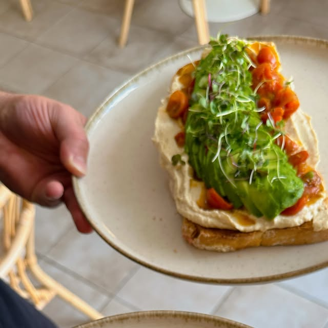
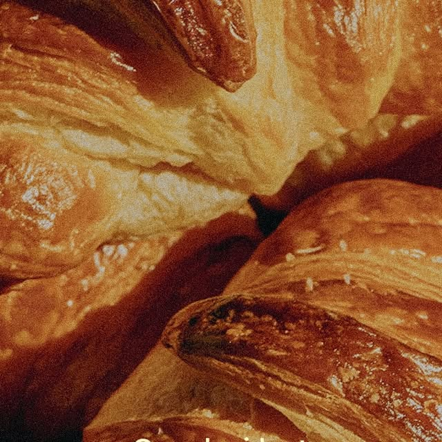
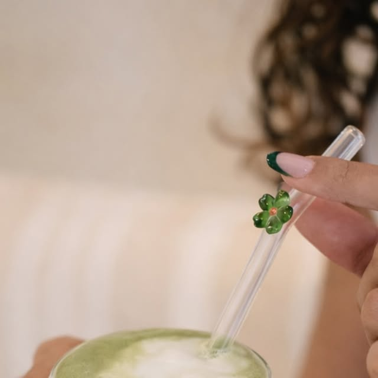
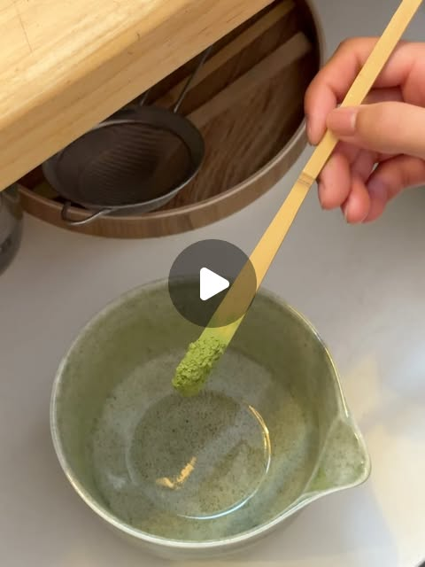
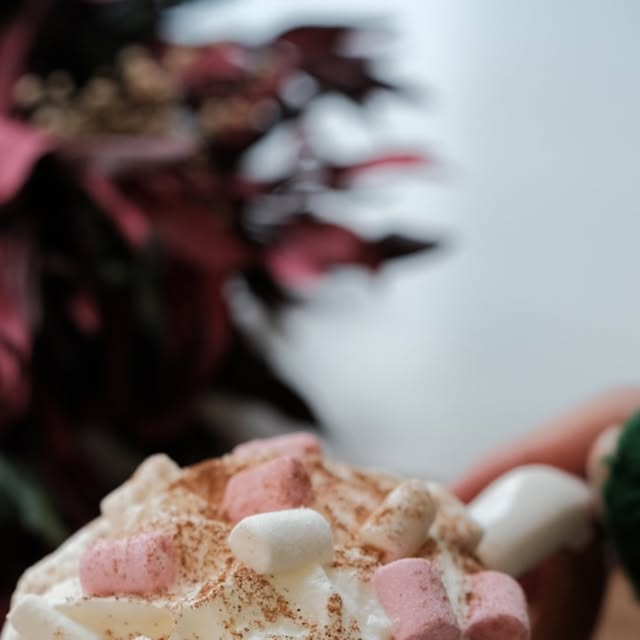
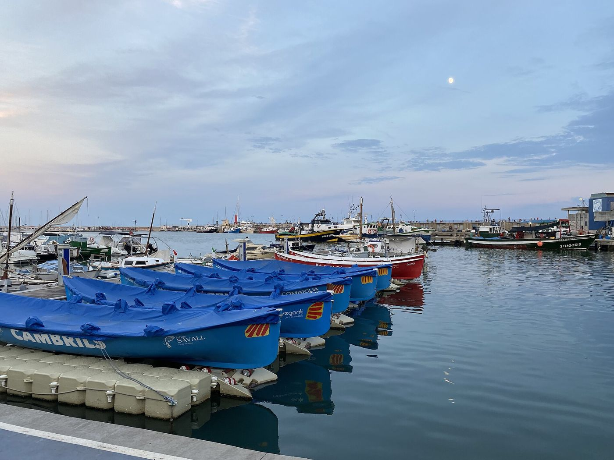

Lo bonito
es compartir.
Brunch, café y platos veggie y sin gluten en Cambrils.
Ver la cartaLos jueves son de pancakes, de 17:00 a 19:00.
Pide unos pancakes y el café, el matcha o el chai va gratis.
Brunch sin prisas, en buena compañía.
Mediterráneo, con mundo detrás
Claudia y Manel llevaron lo que vieron viajando a un brunch clásico de esencia mediterránea. Cada plato pasa por un proceso cuidado antes de llegar a la mesa.
Para todas las mesas
Opciones veganas y sin gluten: tostadas, bagels, sweet toasts y granola sin gluten, y una Caprichosa vegana con hummus.
Lo que más se pide
- Croffle choco & fruta, 7,00 €: fresas, plátano, crema de cacao y avellanas.
- Tostas Benedict, 12,50 €: huevos poché, holandesa y aguacate.
- La Caprichosa, 9,90 €: cherrys confitados, aguacate y feta. También vegana.
- Strawberry matcha latte, 6,50 €.
- Pancakes Sweet, 9,90 €: plátano, fresas y la salsa que elijas.
- Flat white, 2,80 €.





Una comunidad alrededor de la mesa
Yoga y brunch, la after run con seis clubs de running, proyectos locales y jueves de pancakes. Bonita es el sitio al que se vuelve.
- Yoga & Brunch con Carolina Ledesma Yoga.
- After Run con seis clubs de running.
- Jueves de pancakes de 17:00 a 19:00.
- Proyectos locales como Vira by Ju.
Visítanos en Cambrils
- Dónde
- Carrer de Frederic Mompou 14, 43850 Cambrils, Tarragona
- @bonita.brunch
- Carta
- Carta completa en PDF (castellano y catalán)

El puerto de Cambrils.